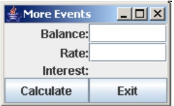

A key event handler deals with keyboard events. For example, a series of events occur when the user types a key in a component that is registered with a key listener. This is useful when you want to control the types of key values that are allowed in a text field. The KeyListener interface includes the following methods used for handling key events:
Each of these events contains a KeyEvent parameter, which contains the key event object that was fired by a registered component. The KeyEvent object contains some useful information. It contains a large number of constant fields for various key values, and it also has a getKeyChar() method that returns a character value of the character that was entered (if the only pressed a key that has no Unicode value, then this method returns KeyEvent.CHAR_UNDEFINED). There is also a getKeyCode() method that returns the ascii value of the key the user pressed, but this this information is only available in the keyPressed() and keyReleased() methods. If you use this method in the keyTyped() event, it will return KeyEvent.CHAR_UNDEFINED.
In the keyTyped() method, you can also use the setKeyChar() method to change the key that the user pressed. This is helpful if you want to discard certain keys (use setKeyChar('\0') to set the key typed to a null value) that are typed by the user. You will most likely use the keyTyped() event method for simple programs that do things like data validation in text fields.
Note that key events are processed before the character typed actually appears in the text field. So when a key event for a registered text field executes for a character typed, that character is not actually included in the text field's value (via getText()). For example, if my txtBox's value is "ab" and then the user types "c" adn the keyTyped() event is triggered, txtBox.getText() will still return "ab" during the keyTyped() event, not "abc". If you need to be able to access a registered text field's value in full as the user is typing, use a DocumentListener.
To register a component with the key listener, you use the addKeyListener() method. Usually you will register text fields with the key listener, but there are other components that can fire key events also.
Design the following interface:

As we did with ActionListener, you can make the interface it's own key listener by implementing the KeyListener interface. You can also implement the ActionListener interface so you can make the buttons work, also. Just separate the interfaces with a comma:
public class KeyExercise extends JFrame implements ActionListener, KeyListener
The addKeyListener(Object) method registers a component with whatever object is the key listener, so you should register the two text fields with "this". They KeyListener interface has the three methods we mentioned earlier, so you have to include them all, even if you aren't using them:
public class KeyExercise extends JFrame implements ActionListener, KeyListener
{
...
public void keyTyped(KeyEvent k)
{
// we'll put code here
}
// we aren't using these, but they must be included:
public void keyPressed(KeyEvent k){}
public void keyReleased(KeyEvent k){}
}
In the keyTyped() event method, use the JOptionPane's showMessageDialog() method to display the result of the KeyEvent parameter's getKeyChar() method.
When you get that working, try displaying this, instead:
"Ascii: " + (int)k.getKeyChar()
Now try writing the event handler code to discard any value that isn't a letter.
When you get this working, what happens when you use the (.) decimal/period? Write one if-statement that throws away any value that isn't a digit or decimal point.
Another type of event you can handle in a program is a mouse event. Actually, mouse events in Java are divided into two different listener classes: MouseListener and MouseMotionListener. Each class has a set of event methods as described below:
For both listeners, all events have a MouseEvent parameter that represents the mouse event object that was fired. Some useful methods of this object are:
There are new additions to newer versions of Java that you might like to check out. For example, you can now write code that responds to events from the mouse wheel. Check the documentation to read more.
When implementing the interfaces for listeners that contain more than one event handler method, programmers find it cumbersome to include the empty methods that aren't being used. For example, if your program needs a MouseListener to respond to mouseClicked() events, you have to also include empty methods for mousePressed(), mouseReleased(), mouseExited(), and mouseEntered() or your program won't compile. Most programmers use Java's adapter classes to make event handling more convenient.
For every listener that has 2 or more methods, there is an adapter class. For example, there's a KeyAdapter, MouseAdapter, and MouseMotionAdapter (there's also a MouseInputAdapter if you want methods from both mouse listener classes). There's no ActionAdapter, because the ActionListener interface has only one abstract method (actionPerformed()). Each adapter class contains the empty event handler methods for its corresponding listener class. Instead of having your interface implement KeyListener, for example, you can instead create an instance of KeyAdapter and include only those key event handler methods you need.
Adapter classes are actually classes, not interfaces. This means that instead of implementing them, you have to create an instance of the adapter class, and therefore change the way you design your event handler. Instead of implementing an interface, we now have to create a child of our adapter class and instantiate it in our constructor. The problem with having to write a separate class however, is that the event handler needs access to data in our program and the program's GUI components.
Instead of creating a separate class in its own file, we can create a private inner class to our program, and make this class a child of our adapter class. A private inner class is a class defined as private whose code resides inside your program's class definition. We usually define inner classes at the bottom of your main class, right before the brace that closes the main class definition:public class CalculateLoan extends JFrame {
//.. other stuff for the CalculateLoan class
// this is an inner class:
private class KeyHandler extends KeyAdapter {
public void keyPressed(KeyEvent e) {
// do whatever when a key is pressed
}
}
}
We make the inner class private because we don't want any other class outside this program to access it. Note that the only time you can define a class as private is if it's an inner class.
Once you've created your inner class, you would instantiate an instance of this class as your event handler and then register your components:
public class CalculateLoan extends JFrame {
public CalculateLoan() {
// ...
KeyHandler kh = new KeyHandler();
txtBalance.addKeyListener(kh);
txtInterest.addKeyListener(kh);
}
public static void main(String[] args) {
//...
}
// this is an inner class:
private class KeyHandler extends KeyAdapter {
public void keyPressed(KeyEvent e) {
// do whatever when a key is pressed
}
}
}
Here is the code for our key handling example with an inner class that extends the KeyAdapter class:
NOTE: this is the hand-written code. Obviously your code will look different if you're using Netbeans.
import java.awt.*;
import java.awt.event.*;
import javax.swing.*;
public class MoreEvents2 extends JFrame implements ActionListener
{
private JTextField txtBalance = new JTextField(10);
private JTextField txtRate = new JTextField(10);
private JLabel lblInterest = new JLabel("", JLabel.RIGHT);
private JButton cmdCalc = new JButton("Calculate");
private JButton cmdExit = new JButton("Exit");
public MoreEvents2() {
super("More Events");
KeyHandler kh = new KeyHandler();
cmdCalc.addActionListener(this);
cmdExit.addActionListener(this);
txtBalance.addKeyListener(kh);
txtRate.addKeyListener(kh);
JPanel pnlFields = new JPanel(new GridLayout(0, 2));
pnlFields.add(new JLabel("Balance:", JLabel.RIGHT));
pnlFields.add(txtBalance);
pnlFields.add(new JLabel("Rate:", JLabel.RIGHT));
pnlFields.add(txtRate);
pnlFields.add(new JLabel("Interest:", JLabel.RIGHT));
pnlFields.add(lblInterest);
JPanel pnlButtons = new JPanel(new GridLayout(1, 0));
pnlButtons.add(cmdCalc);
pnlButtons.add(cmdExit);
JPanel pnlMain = new JPanel(new BorderLayout());
pnlMain.add(pnlFields, BorderLayout.CENTER);
pnlMain.add(pnlButtons, BorderLayout.SOUTH);
Container c = this.getContentPane();
c.setLayout(new FlowLayout());
c.add(pnlMain);
}
public void actionPerformed(ActionEvent e) {
if (e.getSource() == cmdCalc)
{
if (KtcUtils.isNumericFloat(txtBalance.getText()) &&
KtcUtils.isNumericFloat(txtRate.getText()))
{
double balance = Double.parseDouble(txtBalance.getText());
double rate = Double.parseDouble(txtRate.getText());
double interest = balance * (rate/100);
lblInterest.setText(String.format("%.2f", interest));
txtBalance.setText("");
txtRate.setText("");
txtBalance.requestFocus();
} else {
JOptionPane.showMessageDialog(null,
"Is there a problem with one of your values?",
"Error", JOptionPane.ERROR_MESSAGE);
}
} else if (e.getSource() == cmdExit)
{
// using my own library here:
if (KtcGuiUtils.exitOk())
System.exit(0);
}
}
private class KeyHandler extends KeyAdapter
{
public void keyTyped(KeyEvent e) {
if (e.getSource() instanceof JTextField)
{
char key = e.getKeyChar();
if (!Character.isDigit(key) && key != '.')
{
e.setKeyChar('\0');
}
}
}
};
}